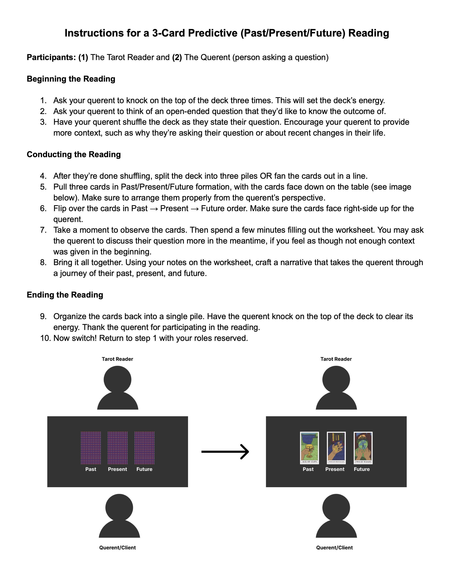
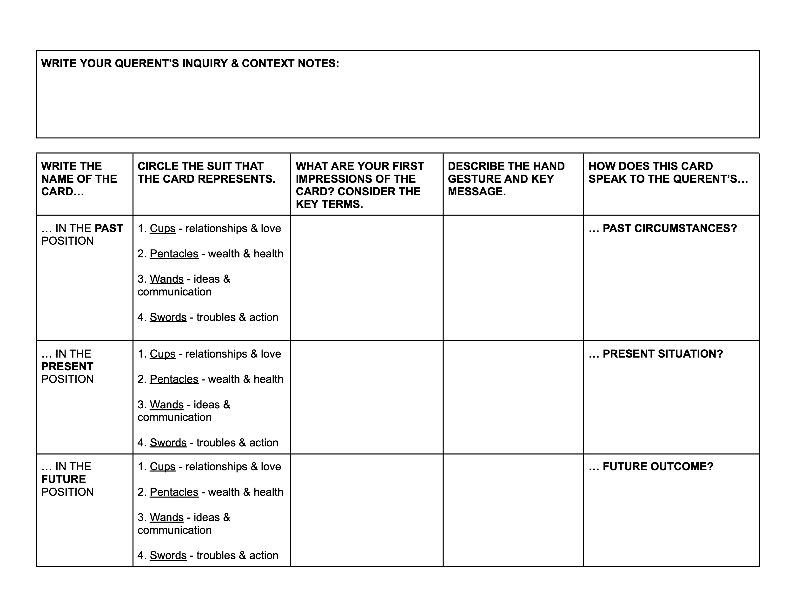

Thesis Weekly Update #10
April 8, 2024: One-on-one meeting, production work
Project Updates
This past week I’ve been playtesting my materials with some people and writing more of my paper. I’ve been making updates to my worksheet and instruction sheet with each playtesting session. This is the current iteration for both:

In addition, I’ve made progress on the following items:
- I’m planning to film a 1-2 minute commercial for my project at the end of April. I’m planning to do this at the studio at my workplace and recruited help from two friends.
- I contacted some printing shops in NYC to have the final iteration of my cards printed, along with the tuck box. I think I’ll have the booklet printed at Minuteman Press again, since I had an easy time doing it the first time.
- I scheduled a dry run of my showcase setup with Sam the following week. I’m hoping to determine a good setup that offers enough light inside the tent setup so that audience members can write on the worksheet effectively.
Some Questions/Concerns
- The playtesting has been going well, but I’m worried that the activity might be too long for the actual thesis showcase. I’m more so worried about how much time the faculty evaluators will have with me. I’m wondering if there’s a different way I can concisely demonstrate how my tarot materials work for the faculty evaluators? Maybe I could have them watch a video first? That video could be the commercial I’m already filming, which will be informative but also be campy in a fun, 90s commercial way, so I don’t know how faculty will perceive it. After they watch the commercial or video, faculty could go through my physical materials and I could talk more about how they all work together.
- I am struggling to keep my process paper under 5k words. My approach so far has been writing everything out and cutting after I have a complete first draft. I’m wondering if 5k is a hard cap? I’m also wondering if it’s okay to have friends who I trust with good editing skills to read over my paper and recommend places to trim down? I notoriously write too much but that’s because I love this project!
- Do I need to think about copyrighting anything at this moment?